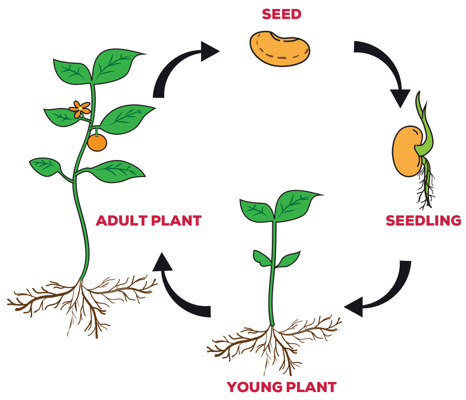

Roots
Roots are usually hidden underground. They anchor the plant in place and absorb water and nutrients from the soil, sending them up to the rest of the plant.
Have you ever wondered how a tiny seed becomes a towering tree or a beautiful flower? It's an incredible journey filled with science and wonder! Join us to learn all about it.

Plants go through several exciting stages as they grow:
Just like us, plants need a few key things to grow big and strong:
Each part of a plant has a special job to do:
Roots are usually hidden underground. They anchor the plant in place and absorb water and nutrients from the soil, sending them up to the rest of the plant.
Stems are like the plant's highway! They support the leaves and flowers, holding them up to the sun. Stems also transport water and nutrients from the roots to the leaves, and food from the leaves to other parts of the plant.
Leaves are the plant's food factories! They capture sunlight and use it, along with carbon dioxide from the air and water from the roots, to make food through a process called photosynthesis. They also release oxygen for us to breathe.
A tiny package that holds a baby plant, ready to grow.
When a seed wakes up and starts to sprout a tiny root and shoot.
The special way plants use sunlight, water, and air to make their own food.
The parts of a plant usually underground that hold it in place and suck up water and food from the soil.
The "food factories" of a plant that use sunlight to make food and release air we breathe.